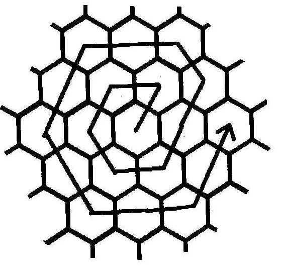

Câu hỏi: Cho hình tổ ong vô hạn. Trong 1 bước, con ong có thể di chuyển như hình dưới.
Hỏi sau n bước thì con ong ở vị trí nào.

Giải:
- Hình vẽ cho thấy mỗi bước con ong di chuyển được 18 ô theo chiều ngược chiều kim đồng hồ
- Vẽ 1 tổ ong có 16 cột x 16 hàng. Mỗi ô là 1 hình 6 cạnh (hexagon)
- Con ong bắt đầu từ ô trung tâm (số 8,8)
- Bước đầu tiên của ong xuất phát từ ô số (9,7)
- Ô cuối của mỗi bước được đánh dấu bằng mầu ĐỎ.